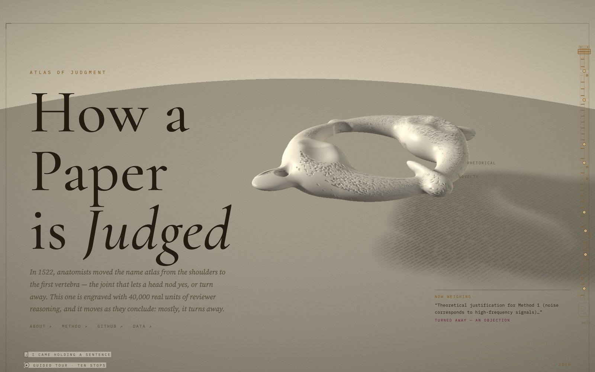
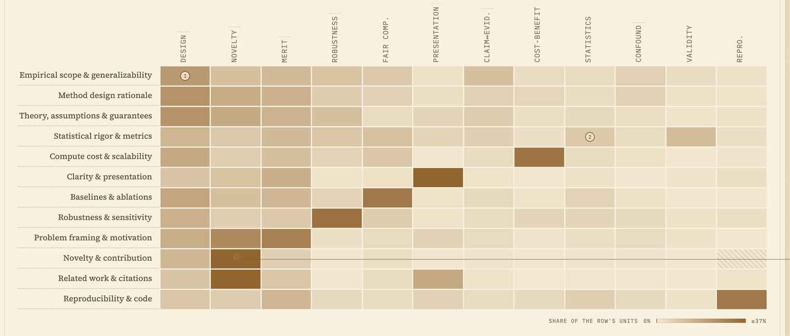
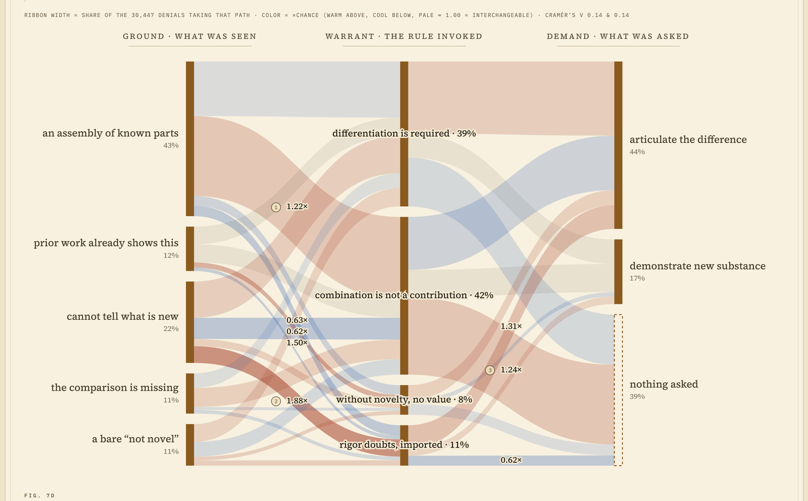
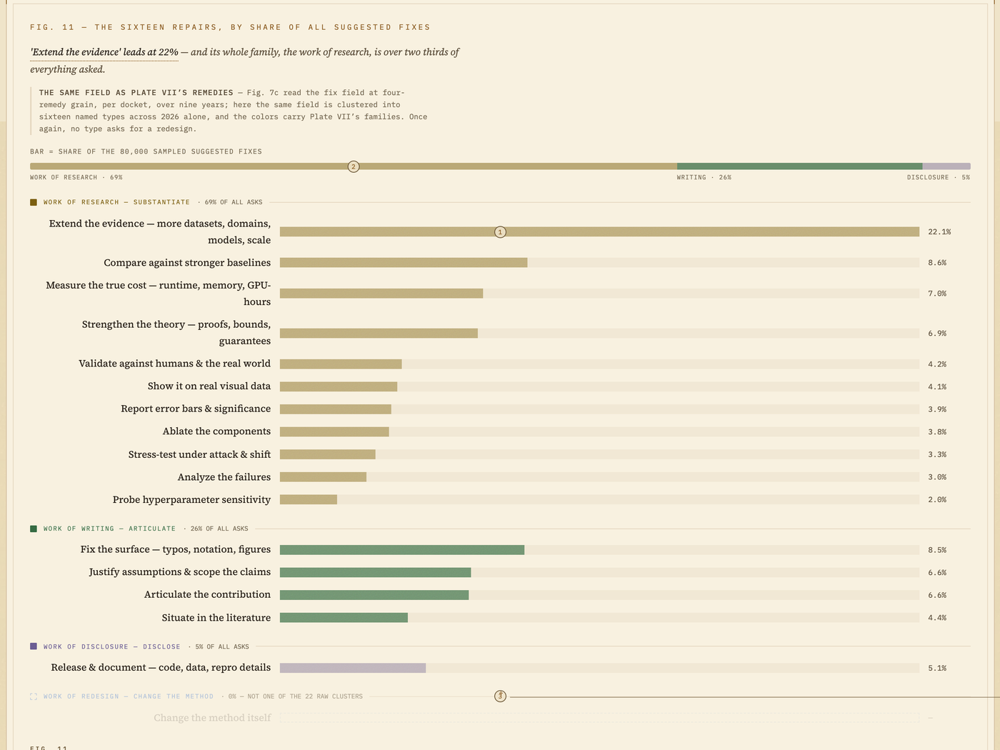
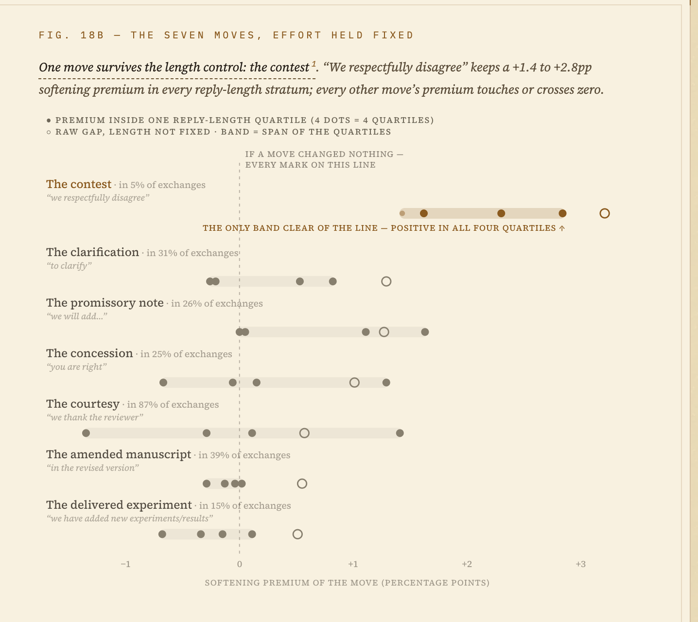
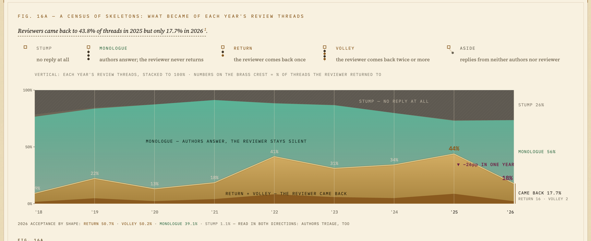
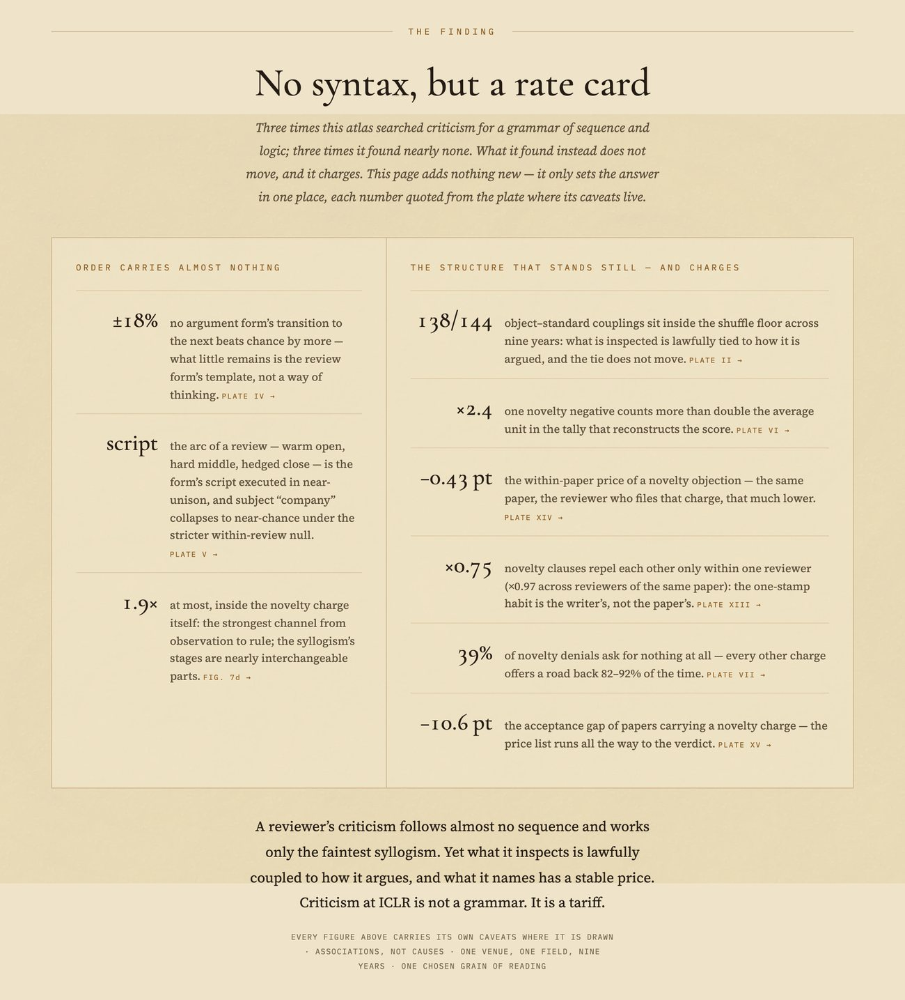
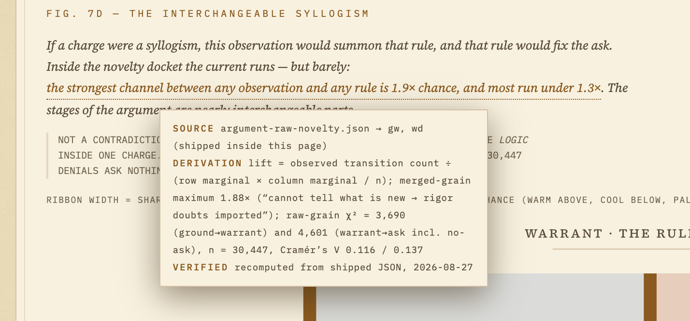

Two reviewers write 5
One means the idea is not new. The other means the experiments do not support the claim. Averaged into a panel statistic, the difference disappears — and the difference was the whole of what happened. Everything that could have been argued with, learned from, or repaired lives in the part that the number compresses away.
That compression is not a flaw in any particular venue. It is what a score is for. But it means that the mechanism deciding what enters the scientific record is usually studied through its output rather than its reasoning: acceptance rates, score distributions, sentiment, reviewer agreement. The argument in between — which part of a paper was looked at, and which rule was held against it — is right there in the text, in public, and almost nobody counts it.
Atlas of Judgment is our attempt at counting it. Every public peer review ICLR has received from 2018 through 2026 — 52,460 submissions, roughly 200,000 reviews — read into 1,009,592 atomic units of evaluative logic, and charted across thirty plates.

One venue, and why that one
The choice of ICLR is not a judgment about ICLR’s quality relative to other venues. It is about what its record holds. ICLR publishes the reviews of the papers it rejects.
Public review archives usually begin where acceptance ends, and a record without the rejected majority shows judgment only where judgment said yes. ICLR’s OpenReview forums carry the full distribution — every submission, every review, every rebuttal, every verdict — for nine consecutive years, from a single source with a single collection path. For a study of reasoning rather than outcomes, that property is worth more than breadth across venues.
The instrument, and what is chosen about it
A language-model pipeline reads each review in two passes — an analytic memo first, then schema-constrained structuring — and splits it into units. A unit is one complete movement of a reviewer’s mind: what was inspected, what was observed about it, which standard was invoked, what was concluded. Each unit carries an object of scrutiny (twelve of them: empirical scope, method design, theory, clarity, novelty, and so on), a reasoning standard (twelve more), and a verdict.
The twelve-by-twelve grammar was induced from the reviews themselves rather than chosen in advance. That is the part worth being careful about, and the site is careful about it in the place where a reader would otherwise trust it. Internal consistency is checked: extraction reliability, construct validity against ICLR’s own sub-scores, shuffle-based null tests. But the aptness of this particular carving is a design choice that no internal check can prove. Another scheme would draw a different map. And the units are machine readings of public reviews — one consistent reading at scale, not ground truth.
We say attempted rather than achieved on the site for exactly this reason, and it is not false modesty. Which categories emerge from a corpus is itself part of what the project was asking.

Some of what turns up
The most common move in reviewing is a demand to justify the design. The single largest current in the corpus runs from observations about the experiments’ scope into the design-justification standard: 4.8% of everything. The modal act of ICLR reviewing is asking why the experiments were set up the way they were — not declaring a result wrong.
Criticism and praise have different shapes. Negative units reach their verdicts through many standards; two thirds of all positive units (66.9%) pass through a single one, merit recognition. Condemnation is spread across the reasoning. Mercy has one narrow channel.
The field’s most expensive objection is barely an argument. A novelty objection has a fixed anatomy — a ground (“too similar to prior work”), a warrant, a demand — and the three parts combine almost freely: the strongest channel between any observation and any rule runs at 1.9× chance, most under 1.3×. Thirty-nine percent of novelty objections ask the authors for nothing specific at all. Meanwhile the share that names a specific prior work fell from 20% in 2018 to 11% in 2026, and within the same paper the charge travels with a score 0.43 points lower — 2.4 times the next-largest charge. The most costly thing you can be accused of is also the least likely to come with a referent or a way out.

Reviewing asks for more of the same; it does not ask for something different. Cluster roughly 80,000 suggested fixes into their natural kinds and “extend the evidence” — more datasets, more baselines, more scale — leads alone at 22%. Sixty-nine percent of all asks are additional research work, 26% is writing, 5% is disclosure. Not one of the twenty-two raw clusters asks the authors to change the method itself. Whatever peer review is doing at this venue, redesigning the object under examination is not among the things it requests.

In the rebuttal, the move authors invest most in does not work. Softening rises with sheer reply length, so any comparison of rebuttal tactics has to hold effort fixed. Do that, and the delivered experiment — new results, run under deadline, at real cost — is the flattest move of all: within a fraction of a point of the line in every length stratum, and the only move whose average premium sits below zero. The one move that survives the control is the contest: “we respectfully disagree” keeps a +1.4 to +2.8 point softening premium in every stratum. We would rather this be checked than believed, and we would rather nobody read it as advice; it is a description of what has correlated with movement, not a strategy that would work if everyone adopted it.

And the conversation is going quiet. Reviewers came back to 43.8% of rebuttal threads in 2025 and 17.7% in 2026 — twenty-six points in a single year. One review thread in four now ends in silence before it begins: the authors reply, and no one is there.

What it adds up to
Three times the atlas went looking for a grammar of reasoning, and three times it came back nearly empty. No transition between argument forms beats chance by more than eighteen percent once each review’s own mix is held fixed. The arc of a review — warm open, hard middle, hedged close — turns out to be the review form’s template rather than a way of thinking. And inside the novelty charge, the stages of the syllogism are near-interchangeable parts.
What does not move is the other half. Which object is inspected stays lawfully tied to how it is argued: 138 of the 144 object-standard couplings sit inside a shuffle floor across nine years. And what a review names has a stable, measurable price, reproduced by two independent routes.
Criticism at this venue is not a grammar. It is a tariff.

Every number is a door
A visualization is more persuasive than the table behind it, so it has to be more honest than the table behind it. On this site that obligation is discharged in a specific way: load-bearing numbers open.
Click one and it names its source file, the derivation that produced it, and the date the value was last checked against the shipped data. Behind that, thirty-three per-plate depositions publish every headline claim as machine-readable JSON with a stable identifier, the island it came from, the script that recomputes it from raw review text, and the caveats that govern how to read it. Forty-eight data files carry checksums.

Two consequences of that apparatus are worth stating plainly, because they are the parts that cost something.
The first is that claims which later fell to a check were corrected in place and logged, rather than quietly rewritten. Three of them so far. One arrived the same day as publication: an audit found that a claimed rise in how widely reviewers spread their attention was largely mechanical — a length-matched null rose almost as much — so the affirmative reading was withdrawn, the null was drawn on the chart, and the correction record says what was shipped and what the check showed. The record is also an API endpoint, so a machine reading this site can see what it got wrong.
The second is a cabinet for the dead. Two analyses were retired after failing their own null tests, and one of them is still on display. A plate once claimed five reviewer archetypes, found by clustering a hundred thousand reviewer profiles; the same pipeline, run on synthetic profiles drawn from one shared field mix and containing no types at all by construction, produced five equally convincing archetypes. The finding was a mirage. Rather than delete it, the site keeps it as an appendix, real roses above forged ones, with the test that killed it.
Built for two readers
There is a second motive underneath this project, and it is about form rather than peer review.
The shapes research takes — the paper, the journal, review itself — are historical designs rather than the only possible ones, and the space of alternatives is barely explored. This site is one small exercise in that direction. Its data is kept separate from its presentation: the same forty-eight files feed the plates a human walks and the API a machine reads, and anyone can build a third view from the same files. Research now has readers that are not human, and we wanted this record, at least, to be legible to both kinds from the start.
So the machine layer is not an afterthought bolted on for compliance. llms.txt is an entry point, there is an OpenAPI schema, and a number can be cited as a plate identifier plus a claim identifier — a citation that survives a visual redesign, because it points at the claim rather than at a sentence in a caption. The code is MIT; the text, figures, and derived data are CC BY 4.0; the unit-level dataset is on Hugging Face.
What it isn’t
It is not a measurement of reviewers. The unit of analysis is a piece of text, not a person, and nothing on the site profiles an individual. The LLM-era plate is corpus-level throughout: it reports how often a frozen vocabulary appears across a whole year of reviews, and labels no individual review as machine-written. That restraint is deliberate — per-review detection is not reliable enough to put a name to, and the plate says so before it says anything else.
It is not a verdict on ICLR. Nine years of a venue publishing its rejections is what made the study possible in the first place, and a record that can be criticized is a record that exists.
It is not complete, and it is not the only way to cut this. One venue, one field, nine years, one chosen grain of reading. Score comparisons across years carry a moving-ruler caveat, because the venue changed its scoring form four times in the period. Associations are not causes, and the site says so wherever a number could be read as one.
Why we’re running this
Our previous notes were about mechanisms of science that could be different from how they are: publishing the research trajectory instead of the reconstructed summary, reviewing a paper without issuing a verdict, and assembling a national research system’s own numbers so it can be looked at. This one is about the mechanism that decides what counts.
The timing is not incidental. Language models are starting to write reviews and to be reviewed by them, and the argument about what that does to peer review is being conducted largely without a description of what peer review currently is. A description will not settle that argument. But it makes a particular kind of question askable: not whether machine reviewing is good or bad in the abstract, but whether the thing it is replacing has the properties people assume it has. On the evidence here, some of them it does not.
What we do not know is whether this changes anything. Perhaps reviewers already know that novelty is the expensive charge and that a delivered experiment rarely moves anyone. Perhaps a description with its caveats attached is less useful than a slogan without them. That is what the record is for: the site is live, the pipeline is open, and we would like to know where it is wrong.
Walk it — and if you find a number we have misread, a caveat we have flattened, or a carving of the text that would have been better than ours, tell us: shiro.takagi@unktok.com, or an issue on the repository.